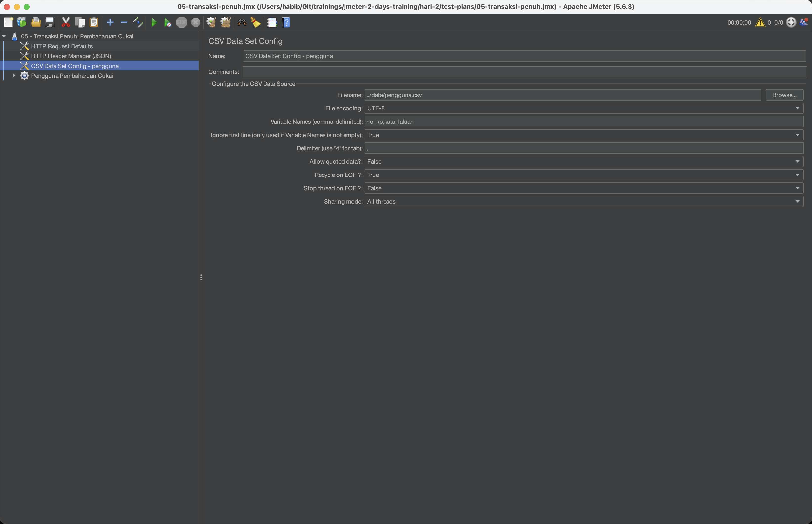
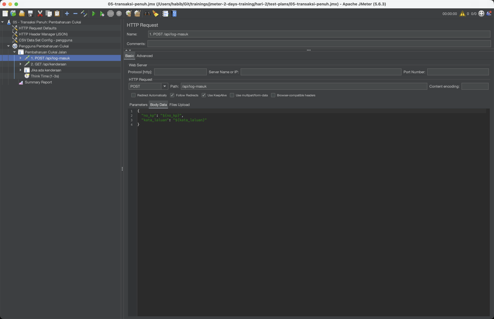
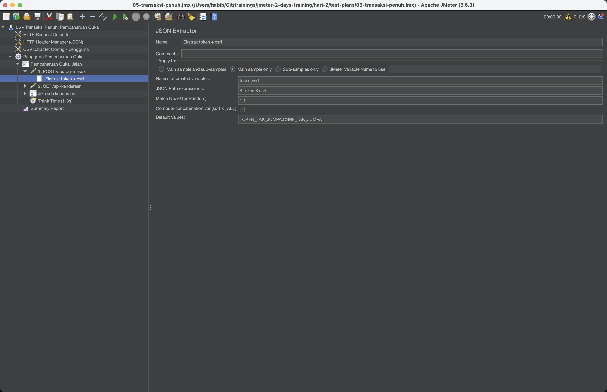

Ujian Prestasi dengan Apache JMeter
Ujian Prestasi Portal eJPJ (tiruan) — dari Test Plan pertama kepada senario puncak “Hari Kenaikan Harga Cukai” dengan gerbang SLA.
localhost:3000 sahaja · data sintetikApa yang anda bawa pulang selepas 2 hari
Faham ujian prestasi
Load, Stress, Spike, Soak, Scalability — dan syarat etika sebelum menjana beban.
Bina Test Plan
Thread Group, HTTP Request, Assertion, Timer dan CSV Data Set di GUI.
Rakam & korelasi
HTTP(S) Test Script Recorder, kemudian JSON Extractor untuk token + csrf.
Logik & skrip
Transaction / If / ForEach Controller, JSR223 Groovy, fungsi __P.
Larian & analisis
Non-GUI, HTML dashboard, percentile, APDEX dan titik pecah.
SLA & automasi
Duration Assertion -Jsla_ms, gerbang SLA untuk CI, Grafana.
.jmx — “kunci jawapan”Dua hari, lapan sesi, satu senario puncak
Hari 1 · Isnin 21 Sep · Asas JMeter
Hari 2 · Isnin 5 Okt · Lanjutan & analisis
Apa itu load testing?
Load testing ialah satu kategori performance testing yang menentukan prestasi sistem dalam keadaan dunia sebenar. Ia mengesahkan infrastruktur sedia ada mencukupi, mengukur beban maksimum yang boleh diurus, dan menentukan kapasiti pengguna serentak.
Alat untuk load testing
Apache JMeter
Percuma, matang, komuniti besar. Fokus kursus ini.
WebLOAD
Skrip JavaScript, laporan analitik terbina.
LoadUI
Ujian beban API, rapat dengan SoapUI.
LoadRunner
Micro Focus / OpenText — banyak protokol, lesen mahal.
NeoLoad
Fokus automasi & integrasi CI.
LoadNinja
Berasaskan awan, guna pelayar sebenar.
.jmx boleh disimpan dalam Git, dan sesuai untuk CI/CD.Apa itu Apache JMeter — dan kenapa ia?
Perisian open-source sepenuhnya berasaskan Java untuk menguji beban dan mengukur prestasi. Ia menilai functional behavior di bawah beban.
Asalnya untuk aplikasi web — kini merangkumi API, pangkalan data, FTP, JMS dan banyak lagi.
Percuma
Tiada kos lesen.
Pelbagai jenis ujian
Load, stress, spike, soak dalam satu alat.
Merentas platform
Windows, macOS, Linux — asal ada Java.
Boleh diubah suai
JSR223 Groovy, fungsi, plugin.
Recording & Playback
Rakam trafik pelayar jadi Test Plan.
Komuniti besar
Dokumentasi luas & ekosistem plugin.
Portal eJPJ (tiruan) — endpoint yang kita uji
| Method | Endpoint | Perlu | Respons | Bila |
|---|---|---|---|---|
| GET | /api/health | — | {"status":"ok","masa":…} | H1 S2 |
| GET | /api/kenderaan/:no/cukai | — | {no_pendaftaran, amaun, tempoh_bulan} · 404 jika tiada | H1 S2–S3 |
| GET | /api/saman?no_kp= | — | {no_kp, saman:[…]} | H1 S3 |
| POST | /api/log-masuk | — | Badan {no_kp, kata_laluan} → {token, csrf, nama, mesej} | H1 S4 · H2 |
| GET | /api/kenderaan?no_kp= | token | {no_kp, kenderaan:[…]} · 401 tanpa token sah | H2 |
| POST | /api/kenderaan/:no/bayar-cukai | token + csrf | {no_resit, …, status:"BERJAYA"} · 401 403 · ~1% 500 | H2 |
| POST | /api/saman/:id/bayar | token + csrf | {no_resit, id, status:"BAYAR"} | Cabaran |
800101015500 WXY1234, VAB88
900202025600 JQK7788
850303035700 BMT3030, PKL909
Token dihantar sebagai Authorization: Bearer <token>; csrf dihantar dalam badan JSON. Mana-mana kata laluan tidak kosong diterima.
Peraturan nombor satu: localhost sahaja
✅ Dibenarkan
- Mock kursus:
http://localhost:3000(sut/) - Staging milik organisasi anda dengan kebenaran bertulis: skop, hos, tetingkap masa, paras beban
- Data sintetik sahaja
❌ Dilarang
- Portal JPJ sebenar / mana-mana laman awam tanpa kebenaran
- “Cuba sikit je” pada production waktu pejabat — atau waktu malam
- No. KP / nombor pendaftaran rakyat sebenar dalam CSV
Sebelum Start ▶: buka HTTP Request Defaults — Server = localhost, Port = 3000. Setiap kali, setiap plan.
Ramal → Start → ✅ Checkpoint → kuiz sesi
- 🔮 Ramal dahuluBerapa sampel? Error % berapa? Throughput naik atau turun? Tulis, kemudian klik Start.
- 🛠️ Bina sendiriPlan rujukan dalam
test-plans/ialah “kunci jawapan” — buka selepas checkpoint, atau jika tersekat > 10 minit. - ✅ CheckpointTandakan dengan jujur — LMS tidak nampak larian di laptop anda.
- 🎯 Kuiz sesiItem terakhir setiap checkpoint. Itulah bukti yang dinilai.
Dua tetingkap sentiasa terbuka
Terminal A: SUT (cd sut && node server.js) — jangan tutup. Terminal B / JMeter GUI: latihan.
jmeter.log.Asas Apache JMeter & Ujian Beban
Pada akhir Hari 1, anda boleh…
| # | Objektif (boleh diukur) | Sesi | Bukti |
|---|---|---|---|
| O1 | Membezakan 5 jenis ujian prestasi & menyatakan syarat etika | S1 | Kuiz S1 · sasaran sah = localhost:3000 |
| O2 | Memasang Java + JMeter (PATH Windows) & menjalankan SUT | S1 | jmeter -v → 5.6.x · /api/health → "status":"ok" |
| O3 | Membina Test Plan pertama | S2 | Latihan 1: View Results Tree hijau, kod 200 |
| O4 | Menetapkan threads / ramp-up / loop & meramal bilangan sampel | S2 | Latihan 2: ramalan 20 × 5 = 100 = # Samples |
| O5 | Meletakkan elemen pada kedudukan betul (skop ikut kedudukan) | S2 | Cabaran Latihan 7: terangkan skop kepada rakan |
| O6 | Mentafsir Average, Median, 90/95/99% Line, Throughput, Error % | S2 | Nilai dicatat (Latihan 2 & 5) |
| O7 | Menambah Response / Duration Assertion & Timer | S3 | Latihan 2: 0% ralat · Latihan 4: ABC0000 → 404 |
| O8 | Memparameter permintaan dengan CSV Data Set & ${…} | S3 | Latihan 3: nombor pendaftaran berlainan setiap permintaan |
| O9 | Merakam aliran & menerangkan kenapa main balik gagal (401) | S4 | Latihan 6: 200 / 401 / 401 · laporan HTML ~67% ralat |
Pengenalan Ujian Prestasi & Persediaan
- Apa & kenapa ujian prestasi · 5 jenis ujian · etika
- Pasang Java + JMeter (termasuk PATH Windows)
- GUI vs non-GUI · jalankan SUT · kenali antara muka
Anatomi ujian prestasi: beban, senario, metrik, kriteria
Berapa ramai?
Pengguna serentak & corak kedatangan (ramp-up).
Buat apa?
Urutan permintaan yang meniru pengguna sebenar.
Apa diukur?
Response time, throughput, error rate.
Lulus bila?
SLA / NFR — ambang lulus/gagal bertulis.
| Metrik | Maksud ringkas | Di mana dilihat hari ini |
|---|---|---|
| Response time | Masa dari permintaan dihantar hingga respons lengkap diterima (ms) | Average, Median, 90/95/99% Line |
| Throughput | Bilangan permintaan disiapkan sesaat (req/s) | Summary / Aggregate Report |
| Error % | Peratus sampel gagal — HTTP 4xx/5xx, rangkaian, atau assertion gagal | Summary / Aggregate Report |
| Concurrency | Bilangan pengguna maya aktif serentak | Thread Group (threads) |
Lima jenis ujian prestasi
Beban dijangka
Tampung beban normal/puncak? Sahkan SLA.
Di mana pecah?
Naikkan pengguna sehingga gagal.
Lonjakan mengejut
Trafik melonjak — pulih semula?
Jangka panjang
Beban sederhana berjam — memory leak?
Tambah sumber
Beban sama, bandingkan konfigurasi.
Pasang Java (JDK 11+, disyorkan 17/21 LTS) & JMeter 5.6.x
java --version # sahkan Java wujud # macOS brew install openjdk@21 brew install jmeter # Windows winget install EclipseAdoptium.Temurin.21.JDK # Linux sudo apt install openjdk-21-jdk jmeter --version # sahkan JMeter wujud
- Muat turun binari
jmeter.apache.org/download_jmeter.cgi— fail.zip. - NyahzipKe laluan ringkas, cth.
C:\apache-jmeter-5.6.3. - Lancar GUI
bin/jmeter(macOS/Linux) ·bin\jmeter.bat(Windows).
C:\Program Files\…, apache-jmeter-5.6.3 (1)) dan jangan jalankan terus dari dalam .zip.JAVA_HOME ke folder JDK dan tambah %JAVA_HOME%\bin ke PATH. Sahkan: java -version.Windows: jalankan jmeter dari mana-mana folder (PATH)
- Nyahzip ke lokasi tetap
C:\apache-jmeter-5.6.3 - Start → “environment variables”Edit the system environment variables → Environment Variables…
- User variables → Path → Edit → NewTampal
C:\apache-jmeter-5.6.3\bin→ OK pada semua tetingkap. Tiada admin diperlukan. - Tutup & buka semula terminalPATH baharu hanya berkuat kuasa dalam terminal baharu.
- Sahkan
jmeter -vmemaparkan versi 5.6.x.
[Environment]::SetEnvironmentVariable("Path",
$env:Path + ";C:\apache-jmeter-5.6.3\bin", "User")
# tutup & buka semula terminal, kemudian:
jmeter -vjmeter menjalankan jmeter.bat dalam bin. Semua arahan kursus (jmeter -n -t … -l … -e -o …) sama — cuma guna backslash: hari-2\test-plans\06-ujian-beban-nogui.jmx.GUI untuk membina, non-GUI untuk beban
Bina & nyahpepijat
Tambah elemen, lihat View Results Tree, sahkan logik dengan 1–5 pengguna. Berat — memori & CPU untuk melukis GUI.
Beban sebenar
Sumber jauh lebih rendah, lebih ramai thread, hasil ke fail .jtl. Sesuai untuk pelayan & CI/CD (Hari 2).
| Bendera | Maksud |
|---|---|
-n | non-GUI |
-t plan.jmx | Test Plan yang dijalankan |
-l hasil.jtl | Fail keputusan (CSV) |
-e -o folder/ | Jana dashboard HTML — folder mesti kosong / belum wujud |
Bina dalam GUI, jalankan beban dalam non-GUI. Jika GUI sesak, yang anda ukur ialah JMeter — bukan SUT.
Jalankan Portal eJPJ (tiruan) — biarkan terbuka sepanjang hari
cd sut node server.js # Node.js 18+, tiada npm install # terminal lain — semakan pantas curl -s http://localhost:3000/api/health # SUT "lambat" untuk demo (S3) LATENCY_MIN=300 LATENCY_MAX=900 node server.js
| Env var | Lalai | Guna |
|---|---|---|
PORT | 3000 | Port SUT |
LATENCY_MIN / MAX | 40–180 ms | Latensi tiruan setiap permintaan |
ERROR_RATE | 0.01 | ~1% bayaran cukai gagal 500 |
set LATENCY_MIN=300 → set LATENCY_MAX=900 → node server.jsPowerShell:
$env:LATENCY_MIN=300; $env:LATENCY_MAX=900; node server.jshttp://localhost:3000 dalam pelayar — halaman info menyenaraikan semua endpoint.Kenali antara muka JMeter

localhost:3000 (kanan)Menu / Toolbar
Buka/Simpan .jmx, Start ▶ / Stop, Clear.
Pokok ujian (kiri)
Struktur Test Plan — klik kanan untuk Add.
Panel konfigurasi (kanan)
Tetapan elemen yang dipilih.
Log ⚠️ (atas kanan)
Ralat & amaran — jmeter.log.
Anatomi Test Plan, Thread Group & Listeners
- Pokok elemen & skop mengikut kedudukan
- Test Plan pertama · threads / ramp-up / loop
- HTTP Request Defaults + Header Manager · View Results Tree / Summary / Aggregate
Test Plan ialah pokok — kedudukan menentukan skop
- Test Plan
- Thread Group users · ramp-up · loop
- HTTP Request Defaults config
- HTTP Header Manager config
- HTTP Request sampler
- Response Assertion assertion
- JSON Extractor post-processor
- Constant Timer timer
- View Results Tree listener
- Thread Group users · ramp-up · loop
| Kategori | Peranan | Contoh |
|---|---|---|
| Thread Group | Populasi pengguna maya | threads, ramp-up, loop |
| Sampler | Hantar satu permintaan | HTTP Request, JDBC |
| Config Element | Tetapan dikongsi | Defaults, Header, CSV Data Set |
| Timer | Jeda (think time) | Constant, Uniform, Gaussian |
| Assertion | Semak respons betul | Response, Duration, JSON |
| Pre/Post-Processor | Sebelum/selepas sampler | JSON Extractor, JSR223 |
| Listener | Kumpul & papar keputusan | View Results Tree, Summary |
Skop mengikut kedudukan & susunan pelaksanaan
Skop mengikut kedudukan
Config, Timer, Assertion & Listener menyentuh semua sampler pada aras sama atau lebih dalam. Di bawah Thread Group → semua sampler. Anak satu sampler → sampler itu sahaja.
Dua kejutan untuk pemula
(1) Timer berjalan sebelum sampler. (2) Timer di bawah Thread Group dengan 3 sampler menjeda 3 kali setiap lelaran — sekali untuk setiap sampler dalam skopnya.
Test Plan pertama: satu pengguna, /api/health
- Test Plan → Add → Threads (Users) → Thread GroupThreads
1· Ramp-up1· Loop1 - Thread Group → Add → Config Element → HTTP Request DefaultsProtocol
http· Serverlocalhost· Port3000 - Add → Sampler → HTTP RequestMethod
GET· Path/api/health— server/port dibiarkan kosong (diwarisi) - Add → Listener → View Results TreeSave
.jmx, kemudian Start ▶ - Sampler kedua: Path
/Halaman info HTML yang menyenaraikan endpoint
Satu tempat untuk alamat SUT
Semua HTTP Request di bawahnya mewarisi server, port, protokol. Tukar localhost → pelayan ujian? Ubah sekali sahaja — dan semak sekali dari sudut etika.
Hijau, kod 200
Sampler result (kod, masa, saiz) · Request (apa yang betul-betul dihantar) · Response data (pilih JSON untuk paparan cantik).
hari-1/test-plans/01-hello-jpj.jmxThread Group: model beban anda
| Medan | Maksud | Cth |
|---|---|---|
| Number of Threads | Pengguna maya serentak | 20 |
| Ramp-Up Period | Saat untuk melancarkan semua thread | 10 |
| Loop Count | Ulangan senario setiap thread | 5 |

Kira sebelum klik Start
# Samples = Threads × Loop Count × bilangan sampler · ramp-up hanya mengubah kadar pelancaran, bukan jumlah
| Threads | Ramp-up | Loop | Sampler | Jumlah sampel | Thread baharu setiap… |
|---|---|---|---|---|---|
| 1 | 1 | 1 | 2 (/api/health, /) | 2 | — |
| 20 | 10 | 5 | 1 | 100 | 0.5 s |
| 10 | 5 | 10 | 1 | 100 | 0.5 s |
| 50 | 20 | 1 | 1 | 50 | 0.4 s |
HTTP Header Manager & Config Element lain
Header Manager boleh bersarang — JMeter menggabungkan kedua-duanya untuk sampler itu:
- Thread Group
- HTTP Header Manager Accept: application/json
- GET /api/kenderaan/WXY1234/cukai
- POST /api/log-masuk
- HTTP Header Manager Content-Type: application/json
POST /api/log-masuk menghantar Accept + Content-Type. Sampler GET hanya menghantar Accept. Corak ini muncul dalam rakaman (S4).HTTP Request Defaults
Nilai lalai protocol / server / port untuk semua sampler.
HTTP Header Manager
Header dikongsi: Accept, Content-Type, Authorization (Hari 2).
HTTP Cookie Manager
Simpan & hantar semula cookie — perlu untuk sesi berasaskan cookie.
HTTP Cache Manager
Tiru cache pelayar (elak muat semula sumber statik).
Listeners: membaca keputusan
View Results Tree
Setiap permintaan/respons penuh. Nyahpepijat sahaja (1–2 pengguna) — sangat berat.
Summary Report
# sampel, Average, Min/Max, Std. Dev., Error %, Throughput. Ringan.
Aggregate Report
Seperti Summary + Median & 90/95/99% Line. Ringan.
.jtl (Hari 2).
Average boleh menipu — baca percentile
| Lajur | Maksud |
|---|---|
# Samples | Bilangan sampel bagi label itu |
Average | Purata masa respons (ms) |
Median | 50% sampel siap dalam masa ini atau kurang |
90% / 95% / 99% Line | Percentile — 90/95/99% sampel siap dalam masa ini atau kurang |
Min / Max | Sampel paling laju / paling lambat |
Std. Dev. | Sebaran — tinggi = tidak konsisten |
Error % | Peratus sampel gagal |
Throughput | Sampel sesaat (semak unit /sec atau /min) |
99 permintaan × 100 ms + 1 permintaan × 10,000 ms:
Assertions, Timers & CSV Data Set
- Response Assertion + Duration Assertion
- Constant / Uniform / Gaussian Timer — think time vs throughput
- CSV Data Set Config: sharing mode, recycle · senario JPJ
Assertion: kod 200 tidak semestinya betul
Response Assertion (anak HTTP Request) · Field to Test: Text Response · Rule: Substring · Pattern: amaun
| Rule | Maksud | Contoh |
|---|---|---|
| Contains | Mengandungi padanan regex | "amaun":\s*\d+ |
| Matches | Seluruh respons padan regex | jarang untuk JSON |
| Equals | Sama persis (teks) | respons pendek tetap |
| Substring | Teks biasa, tiada regex — paling selamat | amaun, BERJAYA |
| Not ☑ | Songsang — lulus jika tiada padanan | ralat |
Terlalu lambat = gagal
Duration in milliseconds 2000 — sampel > 2 s ditanda gagal walaupun kod 200.
Assertion menukar makna “gagal”
Tanpa assertion, hanya ralat rangkaian/HTTP dikira. Dengan assertion, salah kandungan atau terlalu lambat juga masuk Error %.
Timer: think time menjadikan beban realistik
Jeda tetap
Thread Delay — cth. 300 ms setiap sampler.
Rawak seragam
Offset 500 + Random Max 1000 → 0.5–1.5 s (plan 03).
Taburan normal
Offset 1000 ± Deviation 300 ms — paling realistik.
throughput ≈ threads ÷ (masa respons + think time)
Parameterisasi dengan CSV Data Set Config
no_pendaftaran,model WXY1234,Perodua Myvi 1.5 VAB88,Honda Civic 1.8 JQK7788,Proton X50 1.5T BMT3030,Toyota Hilux 2.4 PKL909,Perodua Axia 1.0
/api/kenderaan/${no_pendaftaran}/cukai${nama} = pembolehubah JMeter. Sumber: CSV, User Defined Variables, Extractor (Hari 2), fungsi ${__Random(1,100)}.- Filename
../data/kenderaan.csv— relatif kepada fail .jmx- Variable Names
no_pendaftaran,model(tiada ruang!)- Ignore first line
True— baris tajuk- Recycle on EOF
True- Stop thread on EOF
False- Sharing mode
All threads
03-csv-berparameter.jmx — 10 pengguna × 10 gelung + Uniform Random Timer 0.5–1.5 s. Sahkan nombor berlainan dalam View Results Tree.Sharing mode, EOF & kesilapan lazim
| Gabungan EOF | Selepas baris terakhir | Sesuai untuk |
|---|---|---|
Recycle True · Stop thread False | Kembali ke baris pertama | Data rujukan (sebut harga cukai) — pilihan kita |
Recycle False · Stop thread True | Thread berhenti bila data habis | Setiap baris digunakan sekali (akaun unik) |
Recycle False · Stop thread False | Pembolehubah menjadi <EOF> | Jarang — biasanya pepijat |
Sharing mode
All threads = satu barisan dikongsi. Current thread group / thread = barisan diasingkan.
Ignore first line = False
Lelaran pertama hantar /api/kenderaan/no_pendaftaran/cukai → 404.
Ruang dalam nama
no_pendaftaran, model → pembolehubah ␣model (dengan ruang).
ABC0000,Kereta Hantu → endpoint pulangkan 404, Response Assertion amaun gagal, Error % naik.Lima kes — alat Hari 1 sahaja
Kesihatan sistem
/api/health, 50 pengguna, ramp 20 s. Throughput stabil? Error % = 0?
Beban semak cukai
CSV, 30 × 10 + Response Assertion. Berapa 95th percentile?
Semak saman
/api/saman?no_kp=900202025600, 20 pengguna, assertion saman.
Kesan think time
Kes 2: (a) tanpa timer, (b) Constant Timer 1000 ms. Apa berubah?
Pelayan perlahan
LATENCY_MIN=300 LATENCY_MAX=900. Throughput atau percentile lebih terjejas?
Rakam Test Plan: HTTP(S) Test Script Recorder
- Proxy 8888 + Firefox · sijil CA untuk HTTPS
- Main balik gagal: 200 / 401 / 401
- Laporan HTML dari rakaman → jambatan ke korelasi Hari 2
Proxy JMeter merakam trafik menjadi sampler
localhost:8888localhost:3000- Test Plan → Add → Non-Test Elements → HTTP(S) Test Script RecorderPort lalai
8888 - Thread Group → Add → Logic Controller → Recording ControllerSet Target Controller perakam ke sini
- Requests Filtering → ExcludesRegex aset statik:
(?i).*\.(bmp|css|js|gif|ico|jpe?g|png|…)
test-plans/rakam-template.jmx — perakam (8888) + Recording Controller sudah dipasang.Konfigur Firefox & sijil CA JMeter
- Settings → cari “proxy” → Network SettingsManual proxy: HTTP Proxy
localhost, Port8888· ☑ Also use this proxy for HTTPS - Kosongkan kotak “No proxy for”Buang
localhost, 127.0.0.1— jika tidak, trafik localhost memintas proxy - Selepas rakam: pulihkanUse system proxy settings / No proxy
localhost masih dalam “No proxy for”.| HTTPS (MITM) | Ringkasan |
|---|---|
| Fail sijil | bin/ApacheJMeterTemporaryRootCA.crt — dijana bila perakam Start; sah 7 hari |
| Firefox | Privacy & Security → Certificates → Authorities → Import → ☑ Trust this CA |
| Chrome / Edge (Win) | Dwiklik .crt → Install → Current User → Trusted Root CA |
| “cert not owner” | Anda pilih Local Machine tanpa admin — pilih Current User |
| Selepas selesai | Buang sijil — jangan biar MITM dipercayai kekal |
http:// — langkah sijil tidak perlu hari ini. HTTPS: rakam-https-template.jmx.Rakam aliran log masuk → senarai kenderaan
curl -s -x http://localhost:8888 \
-H 'Content-Type: application/json' \
-d '{"no_kp":"800101015500","kata_laluan":"rahsia123"}' \
http://localhost:3000/api/log-masuk
curl -s -x http://localhost:8888 \
-H 'Authorization: Bearer TOKEN_PALSU' \
'http://localhost:3000/api/kenderaan?no_kp=800101015500'lsof -iTCP:8888 -sTCP:LISTEN -n -P # macOS/Linux netstat -ano | findstr :8888 # Windows
- Recorder → Start ▶JMeter mula mendengar di 8888
- Lakukan aliranFirefox ke
http://localhost:3000, ataucurl -xuntuk POST - Stop ⏹Sampler muncul dalam Recording Controller
- Buka sampler
/api/kenderaanHeader Manager anaknya:Authorization: Bearer TOKEN_PALSU— dikeras-kod - Tambah View Results Tree → RunMain balik… dan perhatikan 401
Rakaman tidak korelasi secara automatik — buktinya
csrf disemak · assertion BERJAYA gagalnode sut/server.js & # pastikan SUT berjalan jmeter -n -t hari-1/test-plans/04-rakaman-mentah.jmx \ -l /tmp/r04.jtl # log-masuk → 200 ; kenderaan → 401 ; bayar-cukai → 401
Authorization: Bearer 4e6b9c2a-…-token-rakaman-luput dan "csrf": "a1b2c3d4…-csrf-rakaman-luput".hari-2/test-plans/04-korelasi-log-masuk.jmx.Laporan HTML dari rakaman & senarai semak bersih-selepas-rakam
# folder output MESTI kosong / belum wujud jmeter -n -t hari-1/test-plans/04-rakaman-mentah.jmx \ -l /tmp/rec.jtl -e -o /tmp/laporan-rakaman/ open /tmp/laporan-rakaman/index.html # atau jana KEMUDIAN dari .jtl sedia ada jmeter -g /tmp/rec.jtl -o /tmp/laporan-rakaman/
| Rakaman | Error % | Sebab |
|---|---|---|
Mentah 04-rakaman-mentah | ~67% | 2 daripada 3 gagal (401) |
Dikorelasi 05-transaksi-penuh | 0% | JSON Extractor tangkap token/csrf |
- Buang sampler aset statik / analitik — bukan beban yang diukur
- Namakan semula sampler:
01 Log masuk,02 Senarai kenderaan - Ganti hos/port keras dengan HTTP Request Defaults
- Tambah Timer — rakaman tiada think time
- Ganti data tetap dengan CSV
- Korelasi
token&csrf— Hari 2
Hasil Hari 1 — dan apa yang menanti
jmeter -vdari mana-mana folder · SUT dilocalhost:300001-hello-jpj.jmx— Test Plan pertama, kod 20002-cukai-beban.jmx— 20 / 10 / 5, assertion, timer, laporan03-csv-berparameter.jmx—kenderaan.csv→${no_pendaftaran}04-rakaman-mentah.jmx— 200 / 401 / 401, ~67% ralat- Skop ikut kedudukan · threads × loop · percentile > purata
Korelasi, logik & beban sebenar
JSON Extractor untuk token + csrf, Transaction / If / ForEach, JSR223, non-GUI + dashboard, SLA, CI.
jmeter -v & node --version (18+) berfungsi. Ingat dua 401 itu. Bawa catatan Throughput / Average / 95% Line Latihan 2 & 5.Korelasi, Logic Controllers, Non-GUI & Analisis SLA
Pada akhir Hari 2, anda boleh…
| # | Objektif (boleh diukur) | Sesi | Bukti |
|---|---|---|---|
| O1 | Menerangkan kenapa replay gagal; parameterisasi vs korelasi | S1 | 04-rakaman-mentah: 200 → 401 → 401 dijelaskan |
| O2 | Membina korelasi token + csrf (JSON / Regex / Boundary) | S1 | Latihan 1: BERJAYA, 0% ralat · csrf salah → 403 |
| O3 | Membina Transaction Controller + If Controller | S2 | Latihan 2: baris Pembaharuan Cukai Jalan (10 × 2) |
| O4 | Mengekstrak pelbagai nilai (Match No. -1) + ForEach | S2 | 08-foreach-kenderaan: 3 pengguna → 5 BERJAYA |
| O5 | Menulis JSR223 Groovy & guna fungsi __Random/__UUID/__P/__time | S2 | Latihan 3: log masuk gagal dengan mesej tersuai |
| O6 | Menjalankan non-GUI (-Jpengguna/-Jrampup/-Jtempoh) + dashboard | S3 | Latihan 4: hasil/<cap-masa>/laporan/index.html |
| O7 | Mentafsir APDEX, percentile, Error % · mengenal pasti titik pecah | S3 | Latihan 5: jadual 50 / 150 / 400 pengguna |
| O8 | Menguatkuasakan SLA dengan Duration Assertion (-Jsla_ms) | S3 | Latihan 6: 2000 → ≈ 0% · 150 → Error % naik |
| O9 | Menghuraikan distributed, CI/CD, Grafana & membina gerbang SLA | S4 | Latihan 7: skrip keluar kod 1 bila NFR dilanggar |
Test plan Hari 2 & SUT yang “bersih”
Plan (hari-2/test-plans/) | Senario | Beban lalai |
|---|---|---|
04-korelasi-log-masuk.jmx | Log masuk → senarai → bayar WXY1234 | 5 pengguna · ramp 3 s · 3 gelung |
05-transaksi-penuh.jmx | Transaction + If: log masuk → senarai → sebut harga → bayar | 10 pengguna · ramp 10 s · 2 gelung |
06-ujian-beban-nogui.jmx | Beban non-GUI (dipakai run-nogui.sh) | ${__P(pengguna,50)} · rampup 30 · tempoh 120 s |
07-beban-puncak-cukai.jmx | Hari Kenaikan Harga Cukai + SLA ${__P(sla_ms,2000)} | ${__P(pengguna,300)} · ramp 30 s · 300 s |
08-foreach-kenderaan.jmx | ForEach: bayar cukai semua kenderaan | 3 pengguna · ramp 3 s · 1 gelung |
cd sut && node server.js # biasa (~1% bayaran 500) cd sut && ERROR_RATE=0 node server.js # lab "bersih"
hari-2/test-plans/ (cth. latihan-01-korelasi.jmx) supaya ../data/pengguna.csv sah.Imbas Kembali & Korelasi
- Warm-up 15 minit:
01-hello-jpj&03-csv-berparameter - Kenapa replay gagal · parameterisasi vs korelasi
- JSON / Regex / Boundary Extractor untuk
token+csrf
Panaskan semula tangan
- Buka
hari-1/test-plans/01-hello-jpj.jmxSebelum Start: HTTP Request Defaults →localhost·3000·http - Jalankan ▶Summary Report: berapa
# Samples? (= Threads × Loop Count) - Buka
03-csv-berparameter.jmxCSV../data/kenderaan.csv→${no_pendaftaran}: lima nombor berlainan dipanggil?
| Soalan pantas (lisan) | Jawapan |
|---|---|
| Skop elemen ditentukan oleh…? | Kedudukan dalam pokok |
| Average atau percentile untuk SLA? | Percentile (90/95/99) |
| Kenapa tiada View Results Tree semasa beban? | Simpan setiap respons dalam RAM |
Main balik 04-rakaman-mentah.jmx? | 200, kemudian 401 401 |
Setiap plan yang dibuka — semak sasaran dahulu: localhost:3000.
Tangkap nilai dinamik pada masa larian, guna semula
{no_kp, kata_laluan} dari CSV$.token;$.csrf → ${token} ${csrf}Authorization: Bearer ${token}"csrf": "${csrf}"Header Authorization
Tiada / salah → 401 Token tidak sah atau tamat tempoh
Badan JSON bayar-cukai
Salah / hilang → 403 Token CSRF tidak sah — sila log masuk semula
Parameterisasi vs korelasi
| Parameterisasi | Korelasi | |
|---|---|---|
| Sumber data | Anda — CSV, User Defined Variables | Pelayan, pada masa larian |
| Contoh | no_kp, kata_laluan dari pengguna.csv | token, csrf dari respons log masuk |
| Elemen JMeter | CSV Data Set Config | Post-Processor: JSON / Regex / Boundary Extractor |
| Diketahui sebelum ujian? | Ya | Tidak |
pengguna.csv memberi siapa yang log masuk; extractor memberi sesi pengguna itu.${token} disimpan dalam pembolehubah thread itu sahaja. 300 pengguna maya = 300 token berbeza — tepat seperti 300 pengguna sebenar.
../data/pengguna.csv → no_kp,kata_laluanTiga cara menangkap token
| Extractor | Bila guna | Konfigurasi untuk token |
|---|---|---|
| JSON Extractor | Respons JSON (API moden) — paling bersih | JSON Path $.token |
| Regular Expression Extractor | Mana-mana teks / HTML / header | Regex "token":"([^"]+)" · Template $1$ |
| Boundary Extractor | Sempadan kiri/kanan jelas — paling laju | Left "token":" · Right " |
{
"token": "b3519618-...",
"csrf": "cefa6be3...",
"nama": "Pengguna 5500",
"mesej": "Log masuk berjaya"
}Match No.
1 = padanan pertama · 0 = rawak · -1 = semua → nama_1, nama_2, … nama_matchNr (S2 + ForEach)
$.csrf ialah JSON Path. //csrf ialah XPath. ${csrf} ialah cara menggunakan pembolehubah — bukan mengekstraknya.Log masuk berparameter, kemudian guna semula
- Thread Group 5 / 3 / 3Defaults
localhost:3000· HeaderContent-Type: application/json - CSV
../data/pengguna.csvVariable Namesno_kp,kata_laluan - POST
/api/log-masukBody Data dengan${no_kp},${kata_laluan}+ JSON Extractor - GET
/api/kenderaanParamno_kp=${no_kp}+ Header anakAuthorization: Bearer ${token} - POST
…/WXY1234/bayar-cukaiHeader anak + Response AssertionBERJAYA
{ "csrf": "${csrf}", "tempoh_bulan": 12, "amaun": 90 }
POST /api/log-masuk — Body Data {"no_kp": "${no_kp}", "kata_laluan": "${kata_laluan}"}Anak sampler log masuk: token;csrf

- Names
token;csrf- JSON Path
$.token;$.csrf- Match No.
1;1- Default
TOKEN_TAK_JUMPA;CSRF_TAK_JUMPA
token dengan nilai default.Bearer TOKEN_TAK_JUMPA. Anda terus tahu korelasi rosak.Buktikan korelasi wajib: 403 vs 401
Aliran nyahpepijat korelasi
- Response data log masukAdakah
tokenwujud? - JSON Path TesterPaparan dalam View Results Tree — uji
$.token - Debug Sampler
token=…,csrf=… - Tab Request sampler seterusnyaHeader & badan mengandungi nilai sebenar?
Ganti ${csrf} dengan abc123
Tukar header kepada Bearer abc
Logic Controllers, ForEach & JSR223 Groovy
- Transaction / If / Loop / Throughput / Runtime Controller
- Match No.
-1+ ForEach — bayar semua kenderaan - JSR223 Groovy · fungsi
__Random__UUID__P__time
Mengawal bila dan bagaimana sampler berjalan
| Controller | Fungsi | Contoh JPJ |
|---|---|---|
| Transaction Controller | Kumpul sampler sebagai satu transaksi & ukur jumlah masa | “Pembaharuan Cukai Jalan” (4 langkah) |
| If Controller | Jalankan anak hanya jika syarat benar | Bayar hanya jika ada kenderaan & token sah |
| Loop Controller | Ulang anak N kali | Semak status bayaran 3 kali |
| ForEach Controller | Gelung atas pembolehubah berindeks (nama_1, nama_2…) | Bayar cukai setiap kenderaan |
| Throughput Controller | Jalankan anak untuk % pelaksanaan | 70% semak cukai, 30% bayar saman |
| Runtime Controller | Jalankan anak untuk tempoh saat tertentu | Semak saman berulang selama 60 s |
| Once Only Controller | Jalankan anak sekali per thread | Log masuk sekali, bayar banyak kali |
Satu angka: “berapa lama untuk memperbaharui cukai?”
- Pengguna Pembaharuan Cukai 10 · 10 s · 2
- Pembaharuan Cukai Jalan transaction
- 1. POST /api/log-masuk
- Ekstrak token + csrf
- 2. GET /api/kenderaan
- Ekstrak kenderaan pertama
- Jika ada kenderaan if
- 3. GET …/${no_pendaftaran}/cukai
- 4. POST …/bayar-cukai
- 1. POST /api/log-masuk
- Think Time (1-3s)
- Pembaharuan Cukai Jalan transaction
| Pilihan | Kesan |
|---|---|
| Generate parent sample ☐ (plan rujukan) | Baris transaksi dan setiap langkah — cari langkah lambat |
| Generate parent sample ☑ | Hanya baris transaksi — laporan pengurusan |
| Include duration of timer… ☐ | Ukur masa sistem, bukan masa pengguna berfikir |
- Ekstrak
$.kenderaan[0].no_pendaftaran;$.kenderaan[0].amaun_cukai→no_pendaftaran;amaun· defaultNONE;0- Timer
- Uniform: Offset
1000+ Random Max2000ms
If Controller: pengawal integriti senario
${__groovy(vars.get("no_pendaftaran") != "NONE" && vars.get("token") != "TOKEN_TAK_JUMPA")}Interpret Condition as Variable Expression? ☑
Lalai JMeter 5.x — syarat mesti menilai kepada true/false. Paling cekap: ${__groovy(...)}.
Setara JEXL3
${__jexl3("${no_pendaftaran}" != "NONE")} — tetapi __groovy disyorkan (paling laju).
Evaluate for all children? ☐
Biarkan tidak ditanda — syarat dinilai sekali sebelum anak berjalan.
Bayar cukai semua kenderaan setiap pengguna
$.kenderaan[*].no_pendaftaran · Match No. -1 · default NONEno_pendaftaran_1, _2, …+ no_pendaftaran_matchNrno_pendaftaranoutput no_semasa · ☑ Add “_” before number/api/kenderaan/${no_semasa}/…nama_1. Jika kotak tidak ditanda, ForEach mencari nama1 → 0 lelaran, tiada ralat, tiada bayaran. Biarkan Start/End index kosong.Bila elemen terbina tidak cukup — tulis Groovy
// PreProcessor (anak bayar-cukai): jana nilai unik
vars.put("no_rujukan",
"REF-" + System.currentTimeMillis() + "-" + Thread.currentThread().getId())
def tempoh = (Math.random() < 0.5) ? 6 : 12
vars.put("tempoh_bulan", tempoh.toString())
// PostProcessor (anak log-masuk): sahkan JSON + tanda gagal
import groovy.json.JsonSlurper
def kod = prev.getResponseCode()
if (kod == "200") {
def json = new JsonSlurper().parseText(prev.getResponseDataAsString())
if (!json.token) {
prev.setSuccessful(false)
prev.setResponseMessage("Log masuk 200 tetapi tiada token dalam respons")
}
} else {
prev.setSuccessful(false)
prev.setResponseMessage("Log masuk mengembalikan kod " + kod)
}| Objek | Maksud |
|---|---|
vars | Pembolehubah thread (String) |
props | Property global JMeter |
prev | SampleResult sampler sebelumnya |
ctx | JMeterContext · getThreadNum() |
log | log.info → jmeter.log |
vars.get("token") — bukan ${token}. ${} diganti sebelum kompil dan mematahkan cache.Fungsi terbina & __P: satu plan, banyak saiz beban
| Fungsi | Hasil · contoh guna |
|---|---|
${__Random(1,1000)} | Integer rawak — ID rawak, pilih cabang |
${__RandomString(8,abcdef)} | Rentetan rawak — nama rujukan |
${__UUID} | UUID unik — X-Rujukan / idempotency key |
${__time(yyyy-MM-dd)} | Tarikh terformat — tarikh transaksi |
${__P(pengguna,50)} | Baca property pengguna (lalai 50) |
${__threadNum} | Nombor thread semasa |
${__groovy(...)} / ${__jexl3(...)} | Nilai ungkapan — syarat If Controller |
Number of Threads : ${__P(pengguna,50)}
Ramp-up period : ${__P(rampup,30)}
Duration (s) : ${__P(tempoh,120)}jmeter -n -t 06-ujian-beban-nogui.jmx -Jpengguna=200
.jmx untuk tukar beban — asas CI dan ujian titik pecah (S3, S4).Non-GUI, HTML Dashboard & SLA
jmeter -n -t … -l … -e -o·run-nogui.sh- APDEX, throughput, percentile, Error % · titik pecah
- Senario puncak
07+ Duration Assertion-Jsla_ms
Beban sebenar dari terminal + dashboard HTML
jmeter -n -t hari-2/test-plans/06-ujian-beban-nogui.jmx \ -Jpengguna=100 -Jrampup=30 -Jtempoh=180 \ -l results.jtl \ -e -o laporan/
cd hari-2/run ./run-nogui.sh # 50 pengguna / 30 s / 120 s PENGGUNA=200 RAMPUP=60 TEMPOH=300 ./run-nogui.sh # hari-2/run/hasil/<cap-masa>/laporan/index.html
Windows: run-nogui.bat · run-nogui.sh sentiasa menjalankan plan 06.
| Bendera | Maksud |
|---|---|
-n | Mod non-GUI |
-t | Fail Test Plan (.jmx) |
-l | Hasil mentah (.jtl) |
-e -o <dir> | Dashboard HTML — dir kosong / belum wujud |
-J<nama>=<nilai> | Property tempatan → ${__P(...)} |
-j <fail> | Fail log JMeter |
-g <jtl> | Jana laporan dari .jtl sedia ada (+ -o) |
.jtl = CSV setiap sampel: timeStamp, elapsed, label, responseCode, success, Latency, Connect… Simpan — laporan boleh dijana kemudian.Membaca laporan/index.html
| Bahagian | Apa yang dicari |
|---|---|
| Dashboard → APDEX | Skor 0–1 per label |
| Requests Summary | Pai Pass / Fail |
| Statistics | # Samples, Average, 90th / 95th / 99th pct, Throughput, Error % per label |
| Errors / Top 5 Errors | 500, 403, “operation lasted too long” |
| Charts → Over Time | Response Times, Active Threads, Transactions Per Second |
| Charts → Throughput | Hits / Transactions per second |
| Charts → Response Times | Percentiles, Distribution |
4. POST …/${no_pendaftaran}/bayar-cukai = satu baris per kenderaan. Laporan pengurusan: bandingkan baris transaksi.Response time ≠ latency ≠ connect time
| Metrik | Maksud | Pandangan sihat |
|---|---|---|
| Throughput | Permintaan / transaksi selesai sesaat | Naik seiring pengguna, kemudian stabil — tidak menurun |
| Average / Median | Purata / titik tengah masa respons | Median < ambang SLA |
| 90 / 95 / 99th pct | 95% permintaan ≤ nilai ini | Utama untuk SLA |
| Error % | Peratus sampel gagal | ≈ 0% (< 1% biasanya diterima) |
| Response time vs Latency | Jumlah masa vs bait pertama | Jurang besar = pemprosesan / penstriman lambat |
NFR ditulis dalam percentile — kemudian cari titik pecah
“Pada 200 pengguna serentak, transaksi Pembaharuan Cukai Jalan mesti mencapai 95th percentile < 1500 ms, Error % < 1%, dan throughput ≥ 20 transaksi/saat, selama 10 minit.”
LATENCY_MIN=200 LATENCY_MAX=800 ERROR_RATE=0.05 node server.js PENGGUNA=50 RAMPUP=10 TEMPOH=60 ./run-nogui.sh PENGGUNA=150 RAMPUP=20 TEMPOH=60 ./run-nogui.sh PENGGUNA=400 RAMPUP=30 TEMPOH=60 ./run-nogui.sh
ERROR_RATE=0.05 = ~5% bayaran gagal tanpa mengira beban. Bandingkan trend antara larian. Pantau CPU — JMeter atau Node yang sesak?Hari Kenaikan Harga Cukai: 07-beban-puncak-cukai.jmx
- Lonjakan Pembaharuan Cukai ${__P(pengguna,300)}
- Pembaharuan Cukai Jalan (Puncak) transaction
- 1. POST /api/log-masuk token + csrf
- 2. GET /api/kenderaan no_pendaftaran
- Jika ada kenderaan & token sah if
- 3. GET …/cukai (sebut harga) amaun + tempoh
- 4. POST …/bayar-cukai
- Bayaran BERJAYA
- SLA Bayaran < ${__P(sla_ms,2000)}ms
- Think Time Rush (0.5-1.5s)
- Pembaharuan Cukai Jalan (Puncak) transaction
| Property | Lalai |
|---|---|
-Jpengguna | 300 |
-Jrampup | 30 s |
-Jtempoh | 300 s |
-Jhost / -Jport | localhost / 3000 |
-Jsla_ms | 2000 ms |
amaun + tempoh_bulan diambil dari sebut harga — bukan dikeras-kod.-Jpengguna=10 -Jrampup=2 -Jtempoh=8Turunkan -Jsla_ms — pelanggaran SLA muncul sebagai Error %
jmeter -n -t ../test-plans/07-beban-puncak-cukai.jmx \ -Jpengguna=300 -Jrampup=30 -Jtempoh=120 -Jsla_ms=2000 \ -l hasil/r7.jtl -e -o hasil/laporan7 # Error % ≈ 0
jmeter -n -t ../test-plans/07-beban-puncak-cukai.jmx \ -Jpengguna=300 -Jrampup=30 -Jtempoh=120 -Jsla_ms=150 \ -l hasil/r7-sla150.jtl -e -o hasil/laporan7-sla150 # Error % naik
Top 5 Errors by sampler · laporan7-sla150
Distributed, CI/CD, Grafana & Penutup
- Controller / worker · gerbang SLA dalam CI
- Backend Listener + InfluxDB + Grafana · amalan terbaik
- Mini-demo capstone · rumusan 2 hari · borang penilaian
Satu controller, banyak worker penjana beban
jmeter -n … -R …mengarah & mengumpul hasil — tidak menjana beban# pada setiap worker jmeter-server # pada controller jmeter -n -t plan.jmx -R worker1,worker2,worker3 \ -Gpengguna=100 -l results.jtl -e -o laporan/
| Perkara | Penting kerana |
|---|---|
| Seluruh Thread Group | 100 thread × 3 worker = 300 pengguna |
-G vs -J | -G hantar property ke worker; -J hanya di controller |
| Fail CSV | Mesti wujud pada laluan sama di setiap worker |
| RMI | SSL lalai (create-rmi-keystore) · server.rmi.ssl.disable=true makmal tertutup sahaja |
| Rangkaian | Rangkaian sama; versi Java/JMeter seragam |
Gerbang SLA: NFR yang boleh menggagalkan build
#!/usr/bin/env bash
# Penggunaan: ./semak-sla.sh hasil/laporan7/statistics.json
STAT="$1"; LABEL="Pembaharuan Cukai Jalan (Puncak)"
P95=$(jq --arg l "$LABEL" '.[$l].pct2ResTime' "$STAT")
ERR=$(jq --arg l "$LABEL" '.[$l].errorPct' "$STAT")
echo "p95=${P95} ms error=${ERR}%"
if awk -v p="$P95" -v e="$ERR" 'BEGIN { exit !(p < 1500 && e < 1) }'; then
echo "LULUS SLA"
else
echo "GAGAL SLA"; exit 1
fijmeter -n keluar dengan kod 0 walaupun sampel gagal — tanpa gerbang, build kekal hijau.- pct1ResTime
- 90th percentile
- pct2ResTime
- 95th percentile
- pct3ResTime
- 99th percentile
- errorPct
- Error % (0–100)
Alternatif: Jenkins Performance Plugin · Taurus (bzt) passfail · Maven/Gradle plugin.
Backend Listener → InfluxDB → Grafana
InfluxdbBackendListenerClient · influxdbUrlHTML dashboard = bedah siasat
Analisis terperinci, dikongsi sebagai laporan, disimpan bersama .jtl.
Grafana = pemantauan
Tonton bersama pasukan infrastruktur — ujian panjang (soak), demo, berhenti awal jika perlu.
Amalan terbaik & kesilapan biasa
| ✅ Amalan baik | ❌ Elak |
|---|---|
| Beban sebenar dalam non-GUI | GUI + View Results Tree semasa beban |
| Korelasi semua nilai dinamik | Mengeras-kod token/csrf yang dirakam |
| Think time & ramp-up beransur | 1000 pengguna serentak, 0 think time |
| Ukur dengan percentile | Bergantung pada Average sahaja |
| Parameter data (CSV) | Data sama diulang → cache palsu |
${__P()} + non-GUI untuk CI | Edit .jmx setiap kali tukar beban |
| Groovy + Cache compiled script | BeanShell / ${} dalam skrip JSR223 |
| Panaskan sistem sebelum ukur | Kira detik pertama (cold start) sebagai SLA |
| Pantau penjana beban (CPU < ~80%) | Menyalahkan SUT bila JMeter sendiri sesak |
Simpan .jtl + .jmx + versi setiap larian | Laporan tanpa konteks (beban? versi? tarikh?) |
| Uji salinan/staging dengan kebenaran bertulis | ❗ Uji pengeluaran/sistem awam tanpa kebenaran |
3 minit setiap pasangan: tunjuk, ukur, putuskan
- ForEach — GUI
08-foreach-kenderaan.jmx+ Summary Report → 5 bayaranBERJAYA - Puncak — non-GUI
07-beban-puncak-cukai.jmx→ buka dashboard - Nyatakan angka95th pct transaksi · Error % · APDEX · LULUS / GAGAL terhadap NFR (Latihan 7)
- Satu ayat“Jika ini sistem sebenar, langkah seterusnya ialah…”
jmeter -n -t ../test-plans/07-beban-puncak-cukai.jmx \ -Jpengguna=50 -Jrampup=10 -Jtempoh=60 \ -l hasil/demo.jtl -e -o hasil/laporan-demo
Anda kini boleh menguji — dan mempertahankan keputusannya
🧱 Membina Test Plan
Thread Group, Defaults, Header Manager, Assertion, Timer, CSV.
🔗 Mengkorelasi sesi
token + csrf dengan JSON / Regex / Boundary Extractor.
⚙️ Memodelkan senario
Transaction, If, ForEach, JSR223 Groovy, __P.
🖥️ Menjalankan beban
Non-GUI, .jtl, dashboard HTML, distributed.
📊 Mentafsir keputusan
Percentile, APDEX, Error %, titik pecah.
🚦 Menguatkuasakan SLA
-Jsla_ms + gerbang CI yang keluar kod 1.
Dari pemasangan kepada gerbang SLA
| Hari 1 — Asas | Hari 2 — Lanjutan |
|---|---|
| Pasang Java + JMeter, SUT tiruan | Korelasi token + csrf (JSON / Regex / Boundary) |
| Anatomi Test Plan, skop mengikut kedudukan | Transaction / If / ForEach Controller |
| Thread Group: threads, ramp-up, loop | JSR223 Groovy + __P, __UUID, __Random, __time |
| HTTP Request Defaults, Header Manager | Non-GUI + .jtl + HTML dashboard |
| Listener, Response & Duration Assertion | APDEX, throughput, percentile, Error %, NFR, titik pecah |
| Timer (think time), CSV Data Set | Senario puncak 07 + SLA -Jsla_ms |
| Rakaman HTTP(S) Test Script Recorder | Distributed, gerbang CI, Grafana, amalan terbaik |
Selepas kursus: ke mana dari sini?
Ulang lab di rumah
node sut/server.js + plan 04–08 — semuanya tanpa internet.
Regex & Boundary pada HTML
Borang dengan <input name="csrf" value="…">.
Pipeline CI malam
06-ujian-beban-nogui.jmx setiap malam + gerbang SLA.
InfluxDB + Grafana
Papan pemuka masa nyata untuk ujian panjang.
Sebelum sistem sebenar
Kebenaran bertulis, staging, tetingkap masa, pasukan infra memantau bersama.
Dokumentasi rasmi
jmeter.apache.org/usermanual · Best Practices.
Sebelum pulang: borang penilaian kursus
- Buka pelatih.myLog masuk ke akaun peserta anda
- Menu “Borang penilaian”Dibuka 2.00 ptg Hari 2 — isi sebelum tamat
- Hantar Kuiz hari — penilaian kendiri Hari 2Tanda item terakhir dalam lab
- Sijil penyertaanDiuruskan oleh penganjur selepas kursus
Terima kasih
Dua hari: dari /api/health satu pengguna kepada lonjakan 300 pengguna pada Hari Kenaikan Harga Cukai — dengan SLA yang boleh diuji mesin.
Soalan? · Borang penilaian (pelatih.my) · Sijil